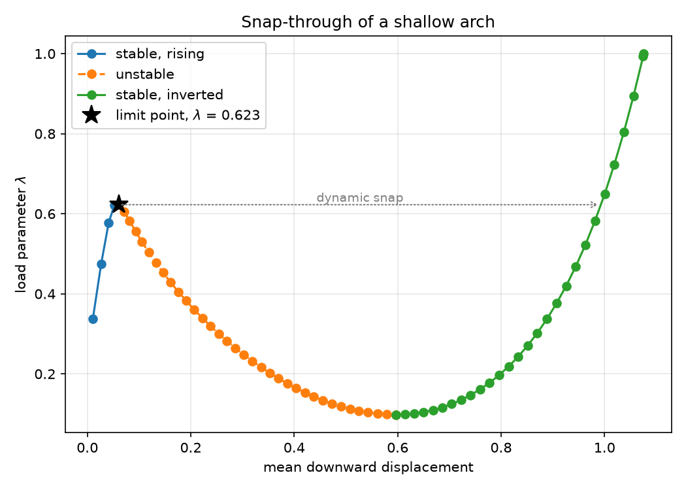
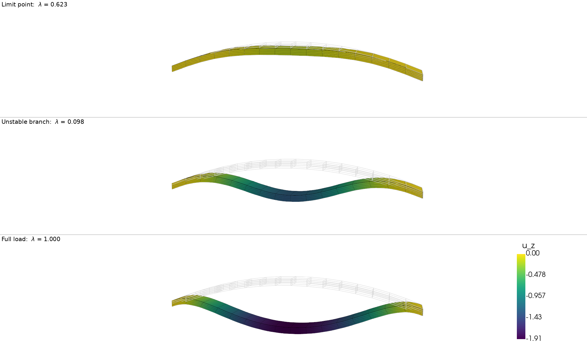

Snap-through buckling of a shallow arch#
Copyright (C) 2026 Garth N. Wells
Download sources
This demo computes the equilibrium path of a shallow hyperelastic arch that buckles by snapping through: as the load grows the arch flattens, loses all stiffness at a limit point, and jumps to an inverted shape.
This demo illustrates how to:
Follow an equilibrium path through a limit point with PETSc’s arc-length continuation solver,
SNESNEWTONAL, driven directly rather than throughNonlinearProblem.Apply a follower pressure, which stays normal to the deformed surface, including the load-stiffness term it contributes to the Jacobian.
Supply the configuration-dependent tangent load that the continuation needs, with
SNES.setNewtonALFunction.Write the residual and Jacobian callbacks that
SNEScalls, including the treatment of Dirichlet conditions.Apply an inhomogeneous Dirichlet condition, an imposed end shortening, and see its effect on the buckling load.
Record the equilibrium path from a
SNESmonitor and plot the load-displacement curve with Matplotlib.Visualise the deformed configurations with PyVista, warping the arch by the computed displacement, and render a frame per increment during the solve so the snap can be watched as it happens.
Equation and problem definition#
The body is a shallow parabolic arch of span \(L\), width \(W\) and thickness \(d\), obtained by lifting a box by \(h \left(1 - (2 X_{0} / L - 1)^{2}\right)\), so that the crown stands a rise \(h\) above the supports. This undeformed body is the reference configuration \(\Omega\), and the formulation below is posed entirely on it: \(X\) are the reference coordinates, \(u\) the displacement from \(\Omega\), \(\nabla\) is taken with respect to \(X\) and \({\rm d}x\) is the reference volume element. Capitals denote reference quantities and lower case their deformed counterparts, so \(\Gamma_{\rm top}\), \(N\) and \({\rm d}S\) below are the reference top surface, outward normal and area element, and \(\gamma_{\rm top}\), \(n\) and \({\rm d}a\) the deformed ones.
The arch is a compressible neo-Hookean solid: with the deformation gradient \(F = I + \nabla u\) and \(C = F^{T} F\), the stored energy density is
where \(\mu\) and \(\Lambda\) are the Lamé parameters. The second one is written \(\Lambda\) so that \(\lambda\) is free for the load parameter below. They are set from a Young’s modulus \(E = 10^{4}\) and a Poisson’s ratio \(\nu = 0.3\), in whatever consistent units the geometry is measured in, by
The reference pressure below is \(1.5\), so the arch buckles under a load of order \(10^{-4} E\). The peak Green-Lagrange strain reaches only a few per cent anywhere on the path, even once the arch has inverted: the displacements and rotations are large, the strains are not. That is the regime a finite-strain formulation is needed for, and it is the geometry rather than the material law that produces the limit point.
The arch is loaded by a pressure \(\lambda p\) on its top surface \(\Gamma_{\rm top}\), with \(\lambda\) the load parameter. A pressure acts along the inward normal of the deformed surface and is measured per unit deformed area, so the traction is \(t = -\lambda p \, n\) and the external virtual work is an integral over the deformed surface \(\gamma_{\rm top}\). Nanson’s formula, \(n \, {\rm d}a = {\rm cof}(F) \, N \, {\rm d}S\) with \({\rm cof}(F) = (\det F) \, F^{-T}\), pulls it back to the reference surface:
The energy stored in the arch is
A follower pressure on a surface whose edge is free to move has no potential, so the load enters through the virtual work above rather than as a term in \(\Pi\). Equilibrium balances the first variation of \(\Pi\) against that virtual work, giving the residual
with \(P = \partial \psi / \partial F\) the first Piola-Kirchhoff stress. Discretising, the problem is to find pairs \((x, \lambda)\) with
where \(r\) is the internal force vector, \(q\) the reference load vector and \(x\) the vector of displacement coefficients. Note that \(q\) depends on \(x\): this is a follower load, which rotates with the surface it acts on as the arch deforms, unlike a dead load whose direction is fixed. Two consequences run through the rest of the demo. The Jacobian picks up a load-stiffness term,
and the reference load vector cannot be assembled once up front.
The end \(X_{0} = 0\) is clamped, \(u = 0\), and the end \(X_{0} = L\) is
pushed inwards by a fixed amount, shortening in the code. The second
condition is inhomogeneous; shortening the span deepens the arch, and
the limit load rises with it as a result.
Why load control fails, and what arc-length continuation does#
Incrementing \(\lambda\) and solving \(f(\cdot, \lambda) = 0\) by Newton’s method traces the path only while the tangent stiffness \(J = \partial r / \partial x\) stays non-singular. At the limit point \(\lambda = \lambda_{\rm lim}\) the arch has no stiffness left against the snapping mode, \(J\) is singular, and beyond it there is no equilibrium on this branch at all: load control cannot continue, however small the increment. The curve \(\lambda(x)\) turns back on itself, so \(\lambda\) is simply the wrong thing to march in.
Arc-length continuation treats \(\lambda\) as an unknown and marches along the path instead. From a converged point \((x_{n}, \lambda_{n})\) it seeks an increment \((\Delta x, \Delta \lambda)\) with
the second equation fixing the length of the step in the combined space of displacements and load. \(\Delta s\) is the arc-length step size and \(\beta^{2}\) weights the load against the displacements; \(\beta^{2} = 0\) gives a cylindrical constraint. Nothing in this pair distinguishes the ascending branch from the descending one, so the limit point is passed without the Jacobian of the augmented system ever becoming singular.
Each iteration within an increment solves two linear systems with the same tangent stiffness,
the first giving the sensitivity of the displacement to the load
parameter and the second the ordinary Newton correction. The update is
\(\delta x = \delta x_{r} + \delta\lambda \, \delta x_{q}\), with
\(\delta\lambda\) chosen so that the new iterate satisfies the
arc-length constraint: a quadratic equation for the exact correction
that PETSc uses by default, or a step orthogonal to \(\Delta x\) for the
cheaper normal correction.
What SNESNEWTONAL asks of the caller#
SNESNEWTONAL needs the residual \(f(x, \lambda)\) and the tangent load
vector \(-\partial f / \partial \lambda = q(x)\).
For a load that is merely proportional, with \(q\) a fixed vector, both
come for free from the right-hand side of the solve: the vector passed
to SNES.solve(q, x) is scaled internally by the current \(\lambda\)
and subtracted from the residual callback’s result, while the
unscaled copy serves as the tangent load. The residual callback would
then assemble only the internal force and never see \(\lambda\).
A follower pressure is not that case. Its \(q\) changes with the configuration, so it must be reassembled wherever it is needed, and three callbacks are registered instead of two:
the residual, which now assembles \(r(x) - \lambda q(x)\) in full and so needs the current \(\lambda\), read back with
SNES.getNewtonALLoadParameter;the Jacobian, which must include the load-stiffness term \(-\lambda \, \partial q / \partial x\) to keep Newton’s quadratic convergence;
the tangent load, registered with
SNES.setNewtonALFunction, which assembles \(q(x)\) at the current iterate.
Nothing is then passed as the right-hand side of the solve.
Continuation runs from \(\lambda = 0\) until \(\lambda\) reaches
-snes_newtonal_lambda_max, here \(1\), so the reference load is the
load finally carried. In between, \(\lambda\) is free to move either
way: here it climbs to the limit load, falls back to about a sixth of
it along the unstable branch, and only then rises to \(1\).
The Newton step and the Dirichlet conditions#
Partition the degrees-of-freedom into those constrained by a Dirichlet
condition, with index set \(\mathcal{I}_{\Gamma}\), and the remainder,
\(\mathcal{I}_{\rm f}\); a subscript \({\rm f}\) or \(\Gamma\) on a vector or
on a matrix block selects the corresponding rows (and columns).
Writing \(g\)
for the vector of boundary values, the constraints are made part of
the residual that SNES is given,
The constrained rows are overwritten wholesale, so the load may be left alone when the residual is assembled. The tangent load is a different matter: \(\delta x_{\Gamma} = q_{\Gamma}\) would be read off its constrained entries, whereas the boundary values do not move with \(\lambda\) at all. Its constrained entries are therefore zeroed in the tangent-load callback below. Since \(g\) here does not depend on \(\lambda\), it contributes nothing more; a \(\lambda\)-dependent boundary value would have to add the lifting of \({\rm d}g/{\rm d}\lambda\) to \(q\).
A Newton step solves \(\tilde{J} \, \delta x = -\tilde{f}\), and partitioning \(J\) in the same way,
The second block row gives the constrained part of the update outright, \(\delta x_{\Gamma} = g_{\Gamma} - x_{\Gamma}\). Being known before the solve, it can be substituted into the first block row, leaving a system in the free unknowns alone:
Eliminating the column block \(J_{{\rm f}\Gamma}\), rather than carrying preserves whatever symmetry the operator has, since zeroing the constrained rows alone would destroy it. Here the internal part \(\partial r / \partial x\) is the second derivative of an energy and so is symmetric, while the follower load stiffness is not symmetric in general, so the tangent as a whole is not; the direct solver used below does not care either way. The matrix that is assembled is therefore
the Jacobian with the constrained rows and columns zeroed and a unit
diagonal inserted, which is what passing bcs to
assemble_matrix
produces.
What the elimination leaves behind, the term \(J_{{\rm f}\Gamma} \left(g_{\Gamma} - x_{\Gamma}\right)\), is added to the right-hand side by the lifting operation,
computed by apply_lifting for a given vector \(x_{0}\) and
scalar \(\alpha\), while set_bc
sets the constrained entries to \(\alpha \left(g_{\Gamma} -
x_{0,\Gamma}\right)\). The vector handed to SNES is \(\tilde{f}\), not
\(-\tilde{f}\), so both are called with \(x_{0} = x\) and \(\alpha = -1\),
giving
from which SNES forms the step. A linear problem is the special case
\(x = 0\), \(\alpha = 1\), in which the lifted right-hand side and the
boundary values enter with the signs they are usually written with.
Implementation#
import sys
from mpi4py import MPI
from petsc4py import PETSc
import matplotlib.pyplot as plt
import numpy as np
import ufl
from dolfinx import default_real_type, default_scalar_type, fem, mesh, plot
from dolfinx.fem.petsc import (
apply_lifting,
assemble_matrix,
assemble_vector,
assign,
create_matrix,
create_vector,
set_bc,
)
from dolfinx.io import XDMFFile
# The problem is real-valued, and the continuation is run to tolerances
# below single precision, so skip the builds this demo does not support
# rather than reporting a result it cannot reach.
if np.issubdtype(PETSc.ScalarType, np.complexfloating):
print("Demo should only be executed with real PETSc scalars.")
sys.exit(0)
if np.issubdtype(default_real_type, np.float32):
print("float32 not yet supported for this demo.")
sys.exit(0)
The arch is built by creating a box of hexahedra and lifting its
vertices onto a parabola, and discretised with quadratic (Q2)
displacements. Quadratic hexahedra bend without the shear locking
that cripples trilinear ones on a slender body, so few of them are
needed: four through the thickness and sixteen along the span put the
limit load within about one per cent of its converged value.
The loaded surface and the two supports are found while the body is still a box, where they are simply \(X_{2} = d\), \(X_{0} = 0\) and \(X_{0} = L\). Moving the vertices afterwards leaves the topology, and so the facet indices, untouched.
L, W, thickness, rise = 10.0, 1.0, 0.25, 1.0
TOP = 1 # Tag of the loaded surface
msh = mesh.create_box(
MPI.COMM_WORLD,
[np.array([0.0, 0.0, 0.0]), np.array([L, W, thickness])],
[16, 1, 4],
mesh.CellType.hexahedron,
)
fdim = msh.topology.dim - 1
facets_top = mesh.locate_entities_boundary(msh, fdim, lambda p: np.isclose(p[2], thickness))
facets_left = mesh.locate_entities_boundary(msh, fdim, lambda p: np.isclose(p[0], 0.0))
facets_right = mesh.locate_entities_boundary(msh, fdim, lambda p: np.isclose(p[0], L))
facet_tags = mesh.meshtags(
msh, fdim, np.sort(facets_top), np.full(len(facets_top), TOP, dtype=np.int32)
)
geometry = msh.geometry.x
geometry[:, 2] += rise * (1.0 - (2.0 * geometry[:, 0] / L - 1.0) ** 2)
V = fem.functionspace(msh, ("Lagrange", 2, (3,)))
u = fem.Function(V, name="displacement")
v, du = ufl.TestFunction(V), ufl.TrialFunction(V)
The kinematics and the stored energy density \(\psi\), from which the
first Piola-Kirchhoff stress \(P = \partial \psi / \partial F\) follows
by differentiation. internal_work is then the first term of \(R\),
\(\int_{\Omega} P : \nabla v \, {\rm d}x\).
I = ufl.Identity(3) # noqa: E741
F = ufl.variable(I + ufl.grad(u)) # Deformation gradient
C = F.T * F # Right Cauchy-Green tensor
Ic, Jdet = ufl.tr(C), ufl.det(F)
E, nu = 1.0e4, 0.3 # Young's modulus and Poisson's ratio
mu, lmbda = E / (2 * (1 + nu)), E * nu / ((1 + nu) * (1 - 2 * nu))
psi = (mu / 2) * (Ic - 3) - mu * ufl.ln(Jdet) + (lmbda / 2) * ufl.ln(Jdet) ** 2
# The quadrature rule is chosen rather than left to UFL. UFL estimates a
# high degree because of the $\ln \det F$ chain, which is expensive.
# Degree 4 is the $3 \times 3 \times 3$ Gauss rule, full integration for
# a triquadratic hexahedron.
dx = ufl.Measure("dx", domain=msh, metadata={"quadrature_degree": 4})
P = ufl.diff(psi, F) # First Piola-Kirchhoff stress
internal_work = ufl.inner(P, ufl.grad(v)) * dx
The external virtual work of the pressure. ufl.cofac()
supplies \({\rm cof}(F)\) of Nanson’s formula, so the integral is taken
over the reference surface while the traction remains normal to the
deformed one. N is the reference outward normal, hence the minus
sign for a pressure pushing inwards.
pressure = fem.Constant(msh, default_scalar_type(1.5))
ds = ufl.Measure("ds", domain=msh, subdomain_data=facet_tags, metadata={"quadrature_degree": 4})
N = ufl.FacetNormal(msh)
external_work = -pressure * ufl.inner(ufl.cofac(F) * N, v) * ds(TOP)
The load parameter is a Constant
so that the callbacks can write the value SNES reports into the
forms without recompiling them.
The three forms are the three objects of \(f(x, \lambda) = r(x) -
\lambda \, q(x)\): internal_work assembles \(r\), external_work
assembles \(q\), and residual assembles \(f\). Note where the minus
signs sit. external_work already carries the one from the inward
pressure, so \(q\) is the load vector of \(f = r - \lambda q\) and
residual subtracts it. tangent_load is that same form without
\(\lambda\), which is exactly the \(q(x)\) SNESNEWTONAL asks for.
Differentiating residual gives \(\partial f / \partial x\), the
load-stiffness term \(-\lambda \, \partial q / \partial x\) included
because external_work depends on \(u\) through \({\rm cof}(F)\).
load_parameter = fem.Constant(msh, default_scalar_type(0))
residual = fem.form(internal_work - load_parameter * external_work)
jacobian = fem.form(ufl.derivative(internal_work - load_parameter * external_work, u, du))
tangent_load = fem.form(external_work)
Boundary conditions#
The support at \(X_{0} = 0\) is clamped and the one at \(X_{0} = L\) is
pushed inwards by shortening, an inhomogeneous condition that
deepens the arch and stiffens it against snapping through.
shortening = 0.02
bcs = [
fem.dirichletbc(
np.zeros(3, dtype=default_scalar_type),
fem.locate_dofs_topological(V, fdim, facets_left),
V,
),
fem.dirichletbc(
np.array([-shortening, 0, 0], dtype=default_scalar_type),
fem.locate_dofs_topological(V, fdim, facets_right),
V,
),
]
Solver setup#
The two callbacks assemble \(b\) and \(\hat{J}\) of the Newton step
derived above. Each begins by copying the iterate x into the
displacement u that appears in the forms, updating its ghost entries
first, since assembly over ghost cells reads them. The copy is kept
even though the vector handed to solve below is u’s own: SNES
does not promise to pass the callbacks that same vector, and a line
search in particular evaluates at a work vector.
def compute_residual(snes: PETSc.SNES, x: PETSc.Vec, b: PETSc.Vec) -> None:
"""Assemble the residual into ``b`` at the point ``x``.
What ``SNES`` is given is the constrained residual: the
unconstrained rows hold the equilibrium residual, and the
constrained rows hold ``x - g``, the amount by which the current
iterate misses the Dirichlet data. Two steps turn the plain
assembled residual into that.
``apply_lifting`` adds the term left behind by eliminating the
constrained columns of the Jacobian, which moves the known
increment of the boundary values onto the right-hand side of the
unconstrained rows. ``set_bc`` then overwrites the constrained rows
themselves. Both are passed ``x0=x`` and ``alpha=-1``: the vector
handed to ``SNES`` is the residual and not its negative, so the
constrained rows must come out as ``x - g`` rather than ``g - x``.
The two are separated by a reverse scatter because they accumulate
differently. Lifting contributes to rows owned by other processes,
so those contributions are summed with ``ADD``/``REVERSE`` first;
``set_bc`` then assigns owned constrained rows outright, which must
not be summed into. The closing ``INSERT``/``FORWARD`` scatter
refreshes the ghost entries to match the owned ones.
The load needs no special handling here, since the constrained rows
are overwritten wholesale. The tangent load is a different matter,
and is zeroed on those entries in :func:`compute_tangent_load`.
Args:
snes: Solver instance, queried for the current load parameter.
x: Point at which to evaluate the residual.
b: Vector to assemble the residual into. This is not
necessarily the vector passed to ``SNES.setFunction``, so
the residual must be assembled into the vector passed here.
"""
load_parameter.value = snes.getNewtonALLoadParameter()
x.ghostUpdate(addv=PETSc.InsertMode.INSERT, mode=PETSc.ScatterMode.FORWARD)
assign(x, u)
with b.localForm() as b_local:
b_local.set(0)
assemble_vector(b, residual)
apply_lifting(b, [jacobian], bcs=[bcs], x0=[x], alpha=-1.0)
b.ghostUpdate(addv=PETSc.InsertMode.ADD, mode=PETSc.ScatterMode.REVERSE)
set_bc(b, bcs, x0=x, alpha=-1.0)
b.ghostUpdate(addv=PETSc.InsertMode.INSERT, mode=PETSc.ScatterMode.FORWARD)
def compute_jacobian(snes: PETSc.SNES, x: PETSc.Vec, J: PETSc.Mat, _P: PETSc.Mat) -> None:
"""Assemble the tangent stiffness into ``J`` at the point ``x``.
The load stiffness is part of ``jacobian``, so it is included here.
Args:
snes: Solver instance, queried for the current load parameter.
x: Point at which to evaluate the Jacobian.
J: Matrix to assemble the Jacobian into.
_P: Matrix for the preconditioner (not used, the Jacobian is
preconditioned by itself).
"""
load_parameter.value = snes.getNewtonALLoadParameter()
x.ghostUpdate(addv=PETSc.InsertMode.INSERT, mode=PETSc.ScatterMode.FORWARD)
assign(x, u)
J.zeroEntries()
assemble_matrix(J, jacobian, bcs=bcs)
J.assemble()
def compute_tangent_load(_snes: PETSc.SNES, x: PETSc.Vec, Q: PETSc.Vec) -> None:
"""Assemble the tangent load vector into ``Q`` at the point ``x``.
This is the reference load at the current configuration, which is
what the continuation needs to work out how the displacement
responds to a change in the load parameter. Its constrained entries
are zeroed, since the boundary values do not move with the load
parameter; passing ``alpha=0`` to :func:`set_bc` sets them to
``0 * (g - 0)``.
Args:
_snes: Solver instance (not used).
x: Point at which to evaluate the tangent load.
Q: Vector to assemble the tangent load into.
"""
x.ghostUpdate(addv=PETSc.InsertMode.INSERT, mode=PETSc.ScatterMode.FORWARD)
assign(x, u)
with Q.localForm() as q_local:
q_local.set(0)
assemble_vector(Q, tangent_load)
Q.ghostUpdate(addv=PETSc.InsertMode.ADD, mode=PETSc.ScatterMode.REVERSE)
set_bc(Q, bcs, alpha=0.0)
Q.ghostUpdate(addv=PETSc.InsertMode.INSERT, mode=PETSc.ScatterMode.FORWARD)
The matrix and vector the callbacks assemble into are created from
the forms, along with a vector for the solver to iterate on. That
vector is kept separate from u’s own storage: the callbacks copy
the point they are given into u, and were u to share storage with
the solver’s vector, a callback evaluated at a work vector would
overwrite the iterate. The initial guess is copied in before the
solve and the solution copied back after.
The solver type is set here rather than through the options database
because SNES.setNewtonALFunction reaches a method that only exists
once the solver is of type newtonal. Called on an untyped solver it
does nothing at all, and the solve then fails with “No tangent load
function or rhs vector has been set”.
A = create_matrix(jacobian)
b = create_vector(V)
x_vec = create_vector(V)
snes = PETSc.SNES().create(msh.comm) # type: ignore[arg-type]
snes.setType(PETSc.SNES.Type.NEWTONAL)
snes.setFunction(compute_residual, b)
snes.setJacobian(compute_jacobian, A, None)
snes.setNewtonALFunction(compute_tangent_load)
Plotting the deformation as the load is applied#
The arch is drawn once per converged increment, so the flattening, the snap and the inversion can be watched rather than inferred from the numbers. The window has two panels: the load-displacement curve traced so far on the left, with a marker on the current state, and the deformed arch on the right. Together they show what the numbers alone do not – the curve turning over at the limit point and running backwards in \(\lambda\) while the arch keeps deflecting. The same curve is plotted with Matplotlib at the end, as the static figure for the documentation.
Redrawing mid-solve needs a window that does not block, which pyvistaqt provides given a Qt binding. Without it the solve simply runs without the animation; the summary at the end is drawn either way.
One grid is built and reused, each frame moving its points and refreshing the colours. The colour range is fixed at roughly twice the rise so colours mean the same thing in every frame, and the undeformed arch stays as an outline. Each process plots the part of the mesh it owns, so a parallel run opens one window per process.
try:
import pyvista
except ModuleNotFoundError:
pyvista = None
print("'pyvista' is required to visualise the solution.")
print("To install pyvista with pip: 'python3 -m pip install pyvista'.")
try:
import pyvistaqt
except ImportError:
# ImportError, not ModuleNotFoundError: pyvistaqt imports qtpy,
# which raises QtBindingsNotFoundError when no Qt binding is present
pyvistaqt = None
rank_suffix = f"_{msh.comm.rank}" if msh.comm.size > 1 else ""
block_size = V.dofmap.index_map_bs
undeformed = deformed = plotter = points = reference_edges = None
load_line = load_marker = None
drawn_deflections: list[float] = []
drawn_loads: list[float] = []
colour_bar = {
"title": "u_z",
"vertical": True,
"position_x": 0.88,
"position_y": 0.1,
"width": 0.04,
"height": 0.8,
"title_font_size": 14,
"label_font_size": 12,
}
# `show_edges` on a higher-degree cell draws VTK's tessellation edges
# rather than the element edges (pyvista/pyvista#867), burying the field
# under a web of lines. Separating the cells first makes each an
# independent patch, so only its outline survives
# `extract_feature_edges` (pyvista/pyvista#5777). Two subdivisions keep
# the element edges visibly curved. `nonlinear_subdivision` needs the
# surface filter PyVista picks by default; newer versions warn that the
# default is changing, but naming it explicitly is unsupported in the
# versions this must run on.
subdivision = 2
def element_surface(grid):
"""Split a grid into a drawable surface and its element outlines.
Args:
grid: Grid of possibly higher-degree cells.
Returns:
The tessellated surface, and the element outlines alone.
"""
surface = grid.separate_cells().extract_surface(nonlinear_subdivision=subdivision)
return surface, surface.extract_feature_edges()
def set_arch_view(plot) -> None:
"""Point the camera at the arch, a little off the side-on axis.
A straight side-on view flattens the arch into a band, hiding its
width and thickness. Swinging the camera round and up a little
restores them, and since the camera is a perspective one the far
end is drawn slightly smaller than the near, which reads as depth.
Args:
plot: Plotter whose active subplot is to be pointed at the arch.
"""
plot.view_xz()
plot.camera.azimuth = 12.0
plot.camera.elevation = 8.0
if pyvista is not None:
cells, types, points = plot.vtk_mesh(V)
undeformed = pyvista.UnstructuredGrid(cells, types, points)
deformed = undeformed.copy()
deformed.point_data["u_z"] = np.zeros(points.shape[0])
_, reference_edges = element_surface(undeformed)
# `pyvista.OFF_SCREEN` says that nothing can be shown -- the
# documentation build sets it -- so there is no window to animate.
panels = {"shape": (1, 2), "col_weights": [1, 2], "window_size": (1500, 400)}
if pyvistaqt is not None and not pyvista.OFF_SCREEN:
plotter = pyvistaqt.BackgroundPlotter(title="Snap-through", auto_update=True, **panels)
else:
plotter = None # Summary only; no per-increment animation
if plotter is not None:
# Left panel: the load-displacement curve, drawn as the
# continuation walks it. This is the view that shows the
# snap-back -- the curve turns over at the limit point and runs
# backwards in $\lambda$ before recovering -- which a plot
# against increment number hides. The line is updated in place
# rather than redrawn, and the ranges are fixed so it does not
# rescale from frame to frame.
plotter.subplot(0, 0)
load_chart = pyvista.Chart2D()
load_chart.x_label = "mean downward displacement"
load_chart.y_label = r"load parameter $\lambda$"
load_chart.x_range = (0.0, 1.15)
load_chart.y_range = (0.0, 1.05)
load_line = load_chart.line([0], [0], color="tab:blue", width=2.0)
load_marker = load_chart.scatter([0], [0], color="tab:red", size=8)
plotter.add_chart(load_chart)
# Right panel: the arch itself
plotter.subplot(0, 1)
plotter.add_mesh(reference_edges, color="lightgray", line_width=1)
set_arch_view(plotter)
plotter.camera.zoom(2.2)
def draw_frame(n: int, lam: float, w: float) -> None:
"""Draw increment ``n`` of the animation.
Updates both panels: the load-displacement curve traced so far on
the left, and the deformed arch on the right.
Args:
n: Continuation increment.
lam: Load parameter at that increment.
w: Mean vertical displacement at that increment, negative
downwards. Plotted as ``-w`` so the curve runs to the
right, matching the Matplotlib figure below.
"""
if plotter is None:
return
assert deformed is not None and undeformed is not None and points is not None
drawn_deflections.append(-w)
drawn_loads.append(lam)
if load_line is not None and load_marker is not None:
load_line.update(drawn_deflections, drawn_loads)
load_marker.update([-w], [lam])
plotter.subplot(0, 1)
values = u.x.array.real.reshape(points.shape[0], block_size)
deformed.points = undeformed.points + values
deformed.point_data["u_z"] = values[:, 2]
surface, edges = element_surface(deformed)
plotter.add_mesh(
surface,
scalars="u_z",
clim=[-2.0 * rise, 0.0],
name="arch",
scalar_bar_args=colour_bar,
)
plotter.add_mesh(edges, color="black", line_width=1, name="arch_edges")
plotter.add_text(rf"$\lambda$ = {lam:.3f}", name="label", font_size=10)
plotter.app.processEvents() # Redraw the window mid-solve
Recording the deformation history#
A monitor is called after every Newton iteration, and once more at the top of each increment. The ones that land on the path are those at which the increment has just converged, which a positive converged reason marks: the reason is reset before each new increment, and the top-of-increment call reports a norm that includes the tangent load, so it does not register as converged. At those points the displacement is appended to a time series and the load parameter and a measure of the deflection are recorded; the average vertical displacement is used, which needs no point location and so works unchanged in parallel.
There is no time in this problem, so the series is indexed by the arc
length \(s = n \Delta s\) travelled along the equilibrium path, which is
the index of the continuation increment. Indexing by \(\lambda\) would
not do: it rises, falls and rises again, so it does not order the
states. Arc length would order them, but the increments are not all
the same length — SNESNEWTONAL shortens the last one so that it
lands exactly on \(\lambda_{\max}\) — and it is not reported, so the
increment count is used instead. The undeformed arch is written at
increment \(0\) so that the history starts from the reference
configuration. Opening the result and warping by the displacement
replays the arch flattening, snapping through and inverting.
arc_step = 0.6 # Arc length of a continuation increment
volume = msh.comm.allreduce(fem.assemble_scalar(fem.form(1 * ufl.dx(msh))), op=MPI.SUM)
deflection = fem.form(u[2] * ufl.dx)
path: list[tuple[float, float, float]] = []
snapshots: list[np.ndarray] = []
# XDMF carries fields of the mesh degree only, so the quadratic
# displacement is interpolated onto a linear space for output. The
# PyVista frames above draw the quadratic field itself.
u_linear = fem.Function(fem.functionspace(msh, ("Lagrange", 1, (3,))), name="displacement")
history = XDMFFile(msh.comm, "out_snap-through/deformation.xdmf", "w")
history.write_mesh(msh)
history.write_function(u_linear, 0.0)
draw_frame(0, 0.0, 0.0)
def record(snes: PETSc.SNES, _its: int, _fnorm: float) -> None:
"""Record the state at the end of a converged increment."""
if snes.getConvergedReason() > 0: # type: ignore[operator]
n = len(path) + 1
w = msh.comm.allreduce(fem.assemble_scalar(deflection), op=MPI.SUM) / volume
lam = snes.getNewtonALLoadParameter()
path.append((n, lam, w))
snapshots.append(u.x.array.real.copy())
u_linear.interpolate(u)
history.write_function(u_linear, float(n))
draw_frame(n, lam, w)
snes.setMonitor(record)
The continuation is configured through the PETSc options database.
snes_newtonal_step_size is the arc length \(\Delta s\) of an
increment: too large a value lets the solver cut across the snap and
miss the limit point, too small a value wastes increments.
snes_newtonal_lambda_max stops the continuation once the full
pressure is carried.
petsc_sys = PETSc.Sys()
if petsc_sys.hasExternalPackage("mumps"):
mat_solver_type = "mumps"
elif petsc_sys.hasExternalPackage("superlu_dist"):
mat_solver_type = "superlu_dist"
else:
mat_solver_type = "petsc"
petsc_options = {
# No "snes_type" here: it is set in code above, before the tangent
# load callback is attached. Setting it here would re-type the
# solver and discard that callback.
"snes_newtonal_step_size": arc_step,
"snes_newtonal_lambda_max": 1.0,
"snes_newtonal_max_continuation_steps": 200,
"snes_newtonal_correction_type": "exact",
"snes_rtol": 1.0e-8,
"snes_atol": 1.0e-10,
"ksp_type": "preonly",
"ksp_error_if_not_converged": True,
"pc_type": "lu",
"pc_factor_mat_solver_type": mat_solver_type,
}
prefix = "demo_snap-through_"
snes.setOptionsPrefix(prefix)
opts = PETSc.Options()
opts.prefixPush(prefix)
for k, val in petsc_options.items():
opts[k] = val
snes.setFromOptions()
for k in petsc_options:
del opts[k]
opts.prefixPop()
Solution#
No right-hand side is passed: the tangent load comes from the callback registered above, not from a vector scaled by the load parameter.
assign(u, x_vec)
snes.solve(None, x_vec)
x_vec.ghostUpdate(addv=PETSc.InsertMode.INSERT, mode=PETSc.ScatterMode.FORWARD)
assign(x_vec, u)
history.close()
assert snes.getConvergedReason() > 0 # type: ignore[operator]
The equilibrium path#
The limit load is the first maximum of \(\lambda\) along the path. Everything between it and the following minimum is the unstable branch, which no load-controlled solve can reach: a pressure raised steadily would send the arch snapping dynamically from the limit point straight to the inverted shape at the same \(\lambda\).
The path is written alongside the deformation history, so that the load-deflection curve can be matched up with the states in the time series by increment number.
history_data = np.array(path)
increment, load_path, mean_deflection = history_data.T
descending = np.nonzero(np.diff(load_path) < 0)[0]
assert len(descending) > 0, "no limit point found: the arch did not snap through"
limit = int(descending[0])
unstable = limit + int(np.argmin(load_path[limit:]))
if msh.comm.rank == 0:
np.savetxt(
"out_snap-through/equilibrium-path.csv",
history_data,
delimiter=",",
header="increment,load_parameter,mean_vertical_displacement",
comments="",
)
print(f"Continuation increments: {len(path)}")
print(f"Limit load: lambda = {load_path[limit]:.4f} at increment {int(increment[limit])}")
print(f"Unstable to: lambda = {load_path[limit:].min():.4f}")
print(f"Final state: lambda = {load_path[-1]:.4f}, mean w = {mean_deflection[-1]:.4f}")
print("\n n lambda mean w")
for n, lam, w in path:
print(f" {n:5d} {lam:8.4f} {w:8.4f}")
The load-displacement curve#
Plotting \(\lambda\) against the deflection shows why the load parameter had to be solved for rather than prescribed: the curve turns back on itself at the limit point, so for loads a little above \(\lambda_{\rm lim}\) there is no nearby equilibrium to march to. The three segments are drawn separately, since the middle one is reached only by continuation, and the arrow marks the jump that a steadily increasing pressure would take instead.
The curve is a global quantity, identical on every process, so it is drawn once on rank 0.
if msh.comm.rank == 0:
descent, recovery = slice(limit, unstable + 1), slice(unstable, len(path))
fig, ax = plt.subplots(figsize=(7, 5))
ax.plot(-mean_deflection[: limit + 1], load_path[: limit + 1], "o-", label="stable, rising")
ax.plot(-mean_deflection[descent], load_path[descent], "o--", label="unstable")
ax.plot(-mean_deflection[recovery], load_path[recovery], "o-", label="stable, inverted")
ax.plot(
-mean_deflection[limit],
load_path[limit],
"k*",
markersize=14,
label=f"limit point, $\\lambda$ = {load_path[limit]:.3f}",
)
# A steadily increasing pressure jumps at constant load, from the
# limit point across to the inverted branch. The load rises
# monotonically along that branch, so the crossing interpolates.
jump_from, jump_to = (
-mean_deflection[limit],
float(np.interp(load_path[limit], load_path[unstable:], -mean_deflection[unstable:])),
)
ax.annotate(
"",
xy=(jump_to, load_path[limit]),
xytext=(jump_from, load_path[limit]),
arrowprops={"arrowstyle": "->", "linestyle": ":", "color": "grey"},
)
ax.text(
0.5 * (jump_from + jump_to),
load_path[limit],
"dynamic snap",
ha="center",
va="bottom",
fontsize=9,
color="grey",
)
ax.set_xlabel("mean downward displacement")
ax.set_ylabel("load parameter $\\lambda$")
ax.set_title("Snap-through of a shallow arch")
ax.grid(visible=True, alpha=0.3)
ax.legend()
fig.tight_layout()
fig.savefig("out_snap-through/load-displacement.png", dpi=150)

The whole path in one picture. The arch stiffens briefly, reaches the limit point, and then gives way. The dashed branch is the part no load-controlled solve could have found, since the load falls along it while the deflection grows. Under a steadily increasing pressure the arch cannot follow that branch at all and jumps across it at constant load, which is the snap of the title.#
Visualisation#
Three states tell the story of the snap: the arch at the limit point, where it is about to lose stiffness; a state on the unstable branch, which carries the least load of the whole path and which no load-controlled solve could have found; and the inverted arch under the full load. Each is drawn by warping the mesh by its displacement, coloured by the vertical component, against the element outlines of the undeformed arch. A common colour range and linked cameras make the three panels directly comparable.
Each process plots the part of the mesh that it owns, so a parallel run produces one image per process.
if pyvista is not None and undeformed is not None:
assert points is not None and reference_edges is not None
if plotter is not None:
plotter.close()
states = {
"Limit point": limit,
"Unstable branch": unstable,
"Full load": len(path) - 1,
}
clim = [float(np.min(snapshots[-1].reshape(points.shape[0], block_size)[:, 2])), 0.0]
summary = pyvista.Plotter(shape=(len(states), 1), window_size=(1000, 600))
summary.image_scale = 2
for row, (label, n) in enumerate(states.items()):
grid = undeformed.copy()
grid.point_data["u"] = snapshots[n].reshape(points.shape[0], block_size)
grid.point_data["u_z"] = grid.point_data["u"][:, 2]
surface, edges = element_surface(grid.warp_by_vector("u"))
summary.subplot(row, 0)
summary.add_mesh(reference_edges, color="lightgray", line_width=1)
summary.add_mesh(
surface,
scalars="u_z",
clim=clim,
show_scalar_bar=(row == len(states) - 1),
scalar_bar_args=colour_bar,
)
summary.add_mesh(edges, color="black", line_width=1)
summary.add_text(rf"{label}: $\lambda$ = {load_path[n]:.3f}", font_size=9)
set_arch_view(summary)
summary.link_views()
summary.camera.zoom(2.2)
if pyvista.OFF_SCREEN:
summary.screenshot(f"out_snap-through/deformed-states{rank_suffix}.png")
else:
summary.show()

The same three states as above, rendered in 3-D and warped by the computed displacement, against the element outlines of the undeformed arch in grey. The colour is the vertical displacement, on a common range, and the cameras are linked, so the three panels are directly comparable.#
Finally, the PETSc objects created here are destroyed.
snes.destroy()
A.destroy()
b.destroy()
x_vec.destroy()